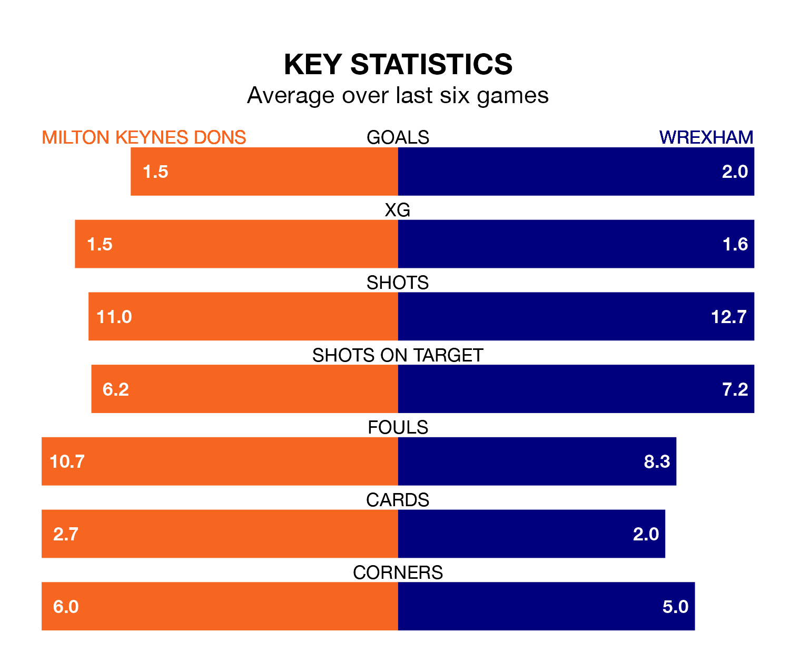

Milton Keynes Dons host Wrexham on Saturday at Stadium mk in EFL League Two.
In their last league match, on Monday, Milton Keynes lost to Doncaster Rovers 3-0 away.
Wrexham won, 4-1 at home against Barrow, with Steven Fletcher (three) and Paul Philip Mullin on the scoresheet.
With 52 goals in 25 games so far this season, Wrexham are the league's third-highest scorers with 2.1 goals per game. And they are conceding fewer than average, letting in 36 goals at a rate of 1.4 per game.
Milton Keynes are also above average scorers, with 1.6 goals per game, compared to a league average of 1.5. They have conceded 1.3 goals per game.
The Dragons are third in the table after 25 games, of which they have won 14 and drawn seven, earning 49 points.
Dons are five places behind the away team in eighth, with 11 wins and six draws putting them on 39 points.
The Dons are in good form in EFL League Two, with four wins and a draw from their last six games.
And also with four wins and a draw over that period, Wrexham's form is identical – they have both taken 13 points from 18.
In Elliott Lee, Wrexham have one of the league's most on-form strikers so far this season. He has notched 13 goals in 25 appearances, to sit seventh in the scoring charts.
His goal rate of one every 165 minutes is slightly quicker than that of Max Dean, the hosts' top scorer with a goal every 150 minutes, and a total of eight goals in 18 games.
Updated: 10:36, 03/01/24